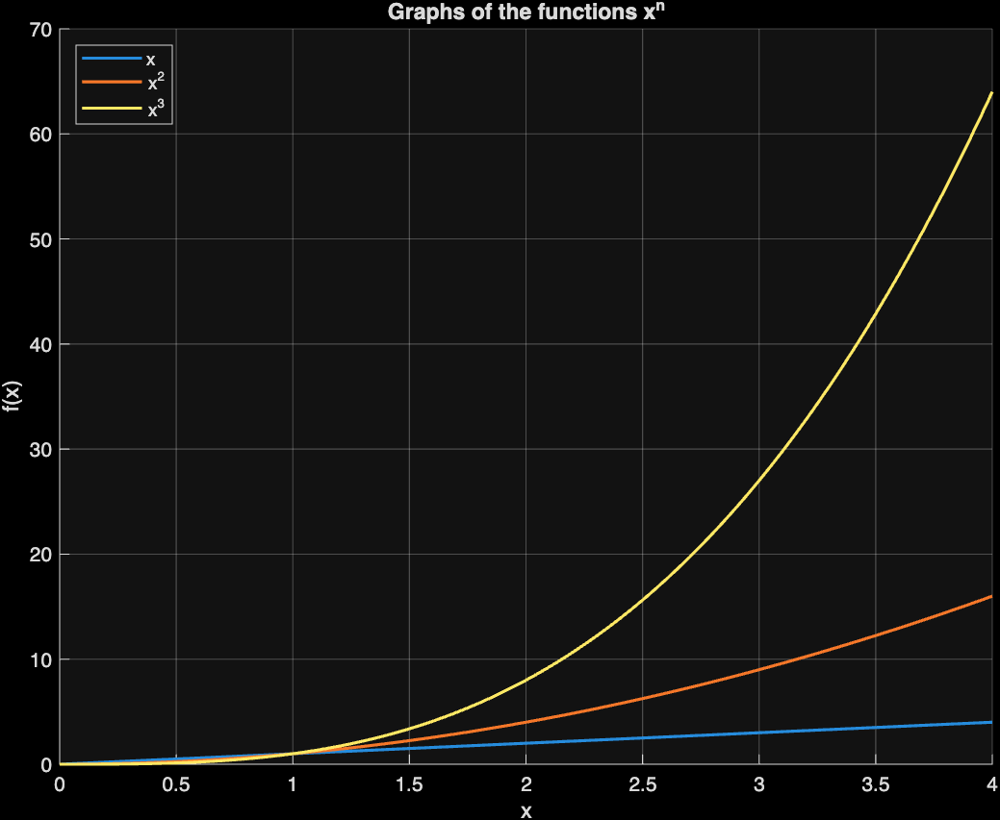
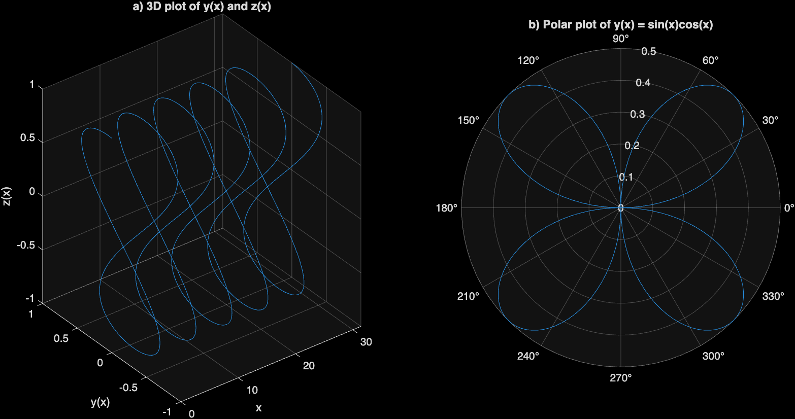
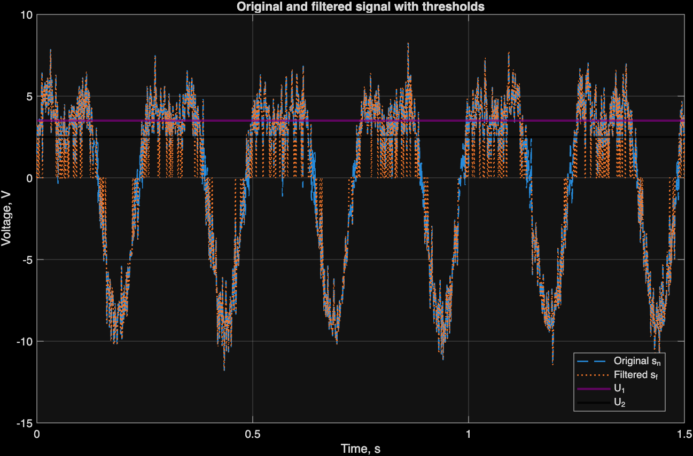
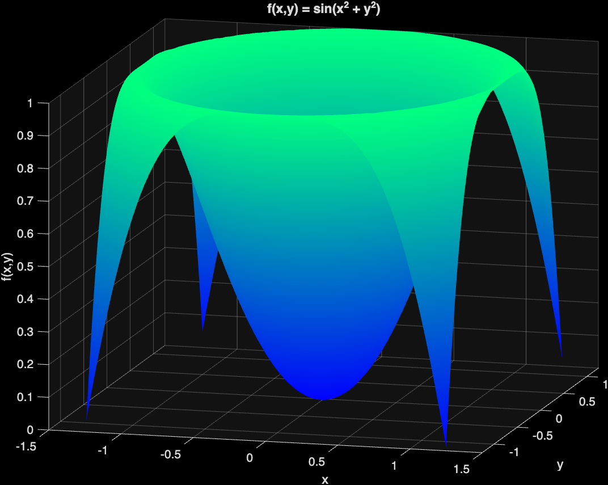
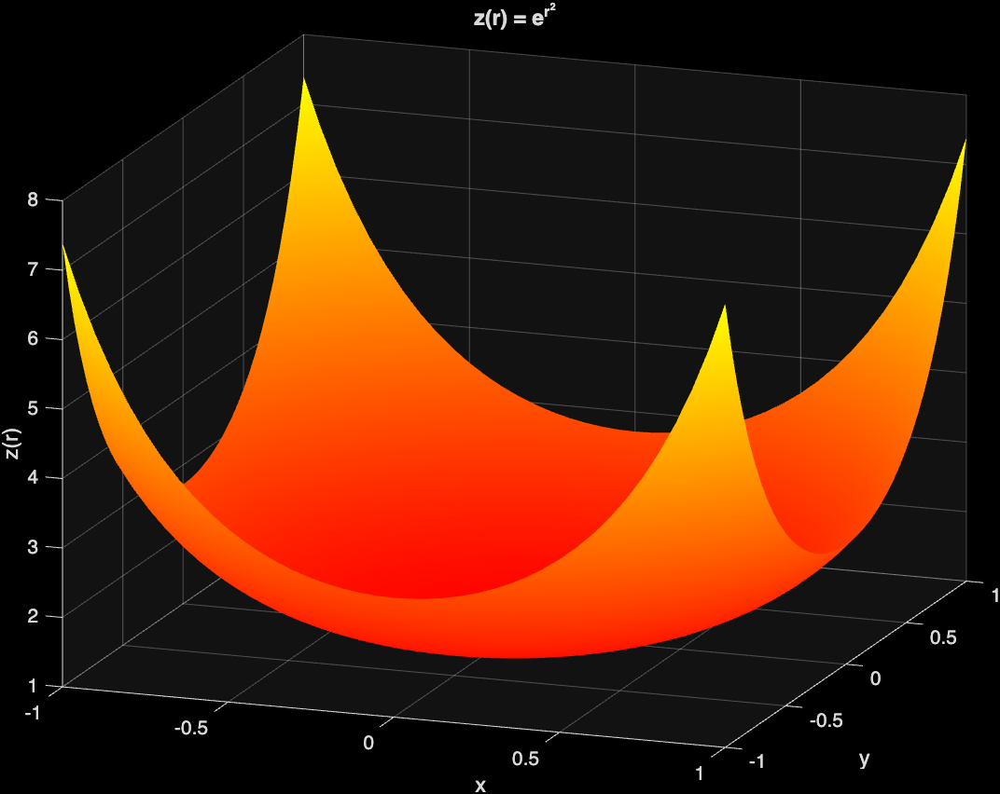
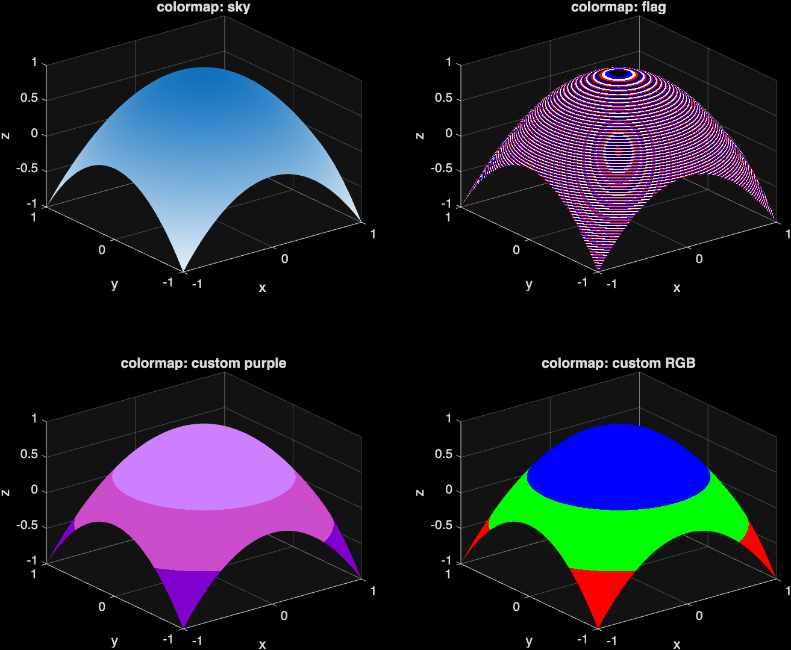

Portfolio
Data visualizations created in MATLAB during Script Programming laboratory works
- All
- MATLAB LW3
- MATLAB LW4


Power Functions xn
MATLAB LW3: comparison of x, x² and x³ growth on [0, 4]


3D and Polar Plots
MATLAB LW3: plot3 curve of sin(x)cos(x) and cos(x) with a polar view


Signal Threshold Filtering
MATLAB LW3: noisy signal filtered by voltage thresholds U1 and U2


Surface f(x,y) = sin(x² + y²)
MATLAB LW4: surf plot on random sorted grid with winter colormap


Surface z(r) = er²
MATLAB LW4: radial exponential surface with autumn colormap


Colormap Comparison
MATLAB LW4: one paraboloid rendered with four different colormaps